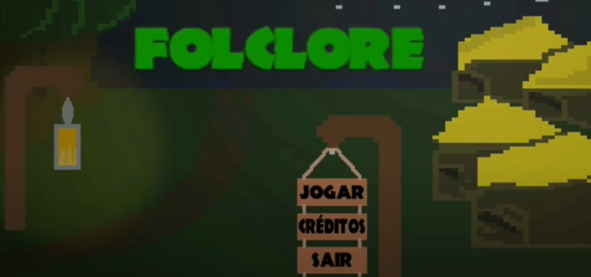

Folclore
Kauã Rosales Pereira, Eduardo Camargo, Juan Pablo, Luiz Geffer e Daniel Victor
Ano da criação: 2022
Gênero: Jogo de plataforma
Tecnologias ou técnicas utilizadas: Unity e C#
História: Folclore é um jogo de aventura em que a protagonista, Iara, tem que buscar a cura para salvar a sua aldeia de uma enfermidade. Para isso, ela precisará enfrentar várias criaturas folclóricas. O jogo é repleto de mecânica de combate, pontuação etc.
Disponibilização para: Trailer